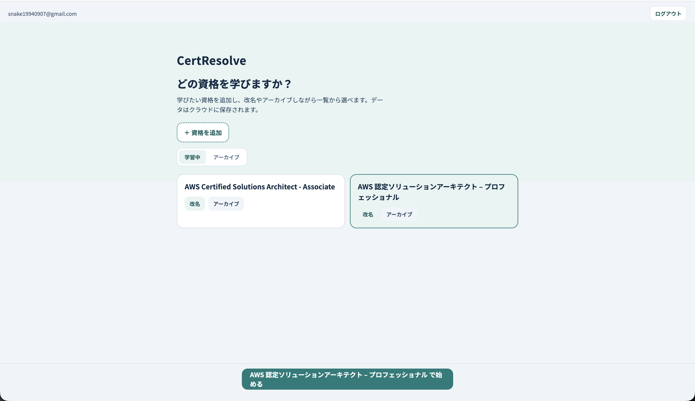

1
学びたい資格を登録する
資格名を追加し、一覧から選んで勉強を始めます。 補足：しばらく使わない資格は「アーカイブ」にしまっておけます（消えるのではなく、あとで戻せます）。

画面イメージ①｜資格の登録・選択
卒業制作｜ツール概要（最新）
画面は実際のアプリから撮ったイメージです。細部のレイアウトは今後変わることがあります。
ひとことで言うと
学びたい資格を登録し、例題づくり・質問・単語の理解確認・間隔反復の復習・弱点分析・模擬試験までを、ひとつの道具の中で続けられる勉強ツールです。
別々のアプリやノートを行き来せず、同じ場所で一貫して続けられます。
ただ試験に受かるためだけでなく、取得後に現場で判断できるようになることを意識しています。
まず資格を登録してメイン画面を開き、例題・質問・単語チェック・復習・分析・模擬試験を行います。やったことは履歴で見返せます。
学びたい資格を追加して選ぶ
カテゴリ付きで編集・削除も
解説で足りない疑問を聞く
自分の説明をAIが評価
定着と現在地の確認
本番に近い形で受ける
資格名を追加し、一覧から選んで勉強を始めます。 補足：しばらく使わない資格は「アーカイブ」にしまっておけます（消えるのではなく、あとで戻せます）。

AIに任せて作ることも、キーワード・画像・参考リンクなどの条件を付けて作ることもできます。 例題がたまると、まとめて解くこともできます（苦手・未解答を優先）。

問題・解説の横で、その例題についての疑問を追加で聞けます。解説に書いていない関連の疑問にも答えられます。

単語とその説明をテキストで送り、AIに内容を評価してもらいます。暗記だけでなく、実務で使える理解かを見るための機能です。
資格を選んだあとの「司令室」です。ヘッダーに復習・分析・設定・本番試験への入口が集まり、本体は3カラム構成です。
期限が来たカードを再テスト。件数バッジ付き。
カテゴリ理解度・キーワード進捗のダッシュボード。
メール・パスワード変更、ログアウト。
本番に近い形の試験へ（詳細は後述）。
まとめて解く・AI質問・キーワードレビューなどを新しい順に確認。
作成・編集・削除、単独で解く、まとめて解く。カテゴリタグ・誤り連絡付き。
理解度チェック。定着の入口にもなる。

Ankiのような分散学習です。一度説明できたキーワードや、解いた例題も、人間はすぐ忘れる前提で「3日後」「1週間後」などに自動で再テストします。

履歴の一覧だけでなく、「ストレージ系は80%だがネットワーク系は30%」「説明できたキーワード数：15/50個」といった現在地を、レーダーチャートと進捗率で一目で見られます。全体／月次／週次の切り替えにも対応しています。

例題カードの「誤りを連絡」から、問題文・選択肢・解説・その他を選んで報告できます。サブエージェントレビューを入れても、生成問題の不備（正解が2つある等）をゼロにはできない前提の安全弁です。

アカウントのメールアドレス変更、パスワード変更、ログアウトをまとめた設定画面を追加しました。

例題にカテゴリ（例：ストレージ・データベース、ネットワーク・コンテンツ配信 など）を付与し、一覧での表示・分析ダッシュボードの軸として使います。カテゴリマスタと累積の正解率も一覧で確認できます。

本番試験受験後に表示される分野別の分析結果の見た目・内容を確認する。
本番試験の結果が実施履歴にどう載るか、詳細画面の見え方を確認する。
「いつ・何をして・どうだったか」をあとから振り返れるようにしています。